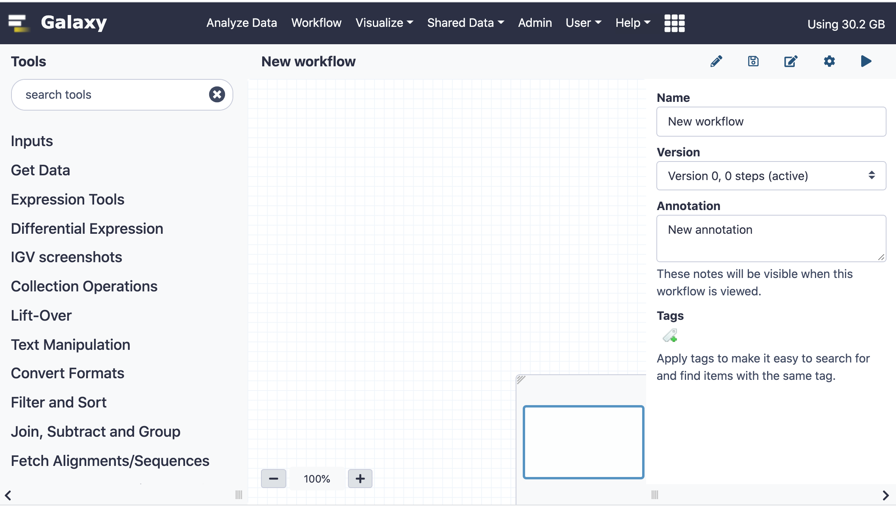
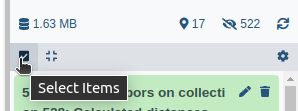

Workflows are a powerful feature in Galaxy that allow you to link multiple steps of complex analysis.
In this tutorial we will demonstrate how to use the Workflow Editor to construct multiple variants of a simple workflow. Note that these workflows are meant to illustrate different concepts. Not all workflows require using all of the features described below, but we hope this tutorial will inspire you to make your analysis tasks more efficient.
tip Tip: Create workflows from existing histories
Workflows can be extracted from existing histories. You can find a tutorial for this here
Workflows logically connect a collection of steps. Possible step types are
currently workflow inputs, tools, and workflows.
Creating a new workflow
hands_on Hands-on: Create a new workflow
Click on Workflow in the top panel of the Galaxy page
On the top right you will see 2 buttons: Create and Import
To create a new workflow click on Create
Enter a Name and Annotation for your workflow and click Save
The Workflow Editor will open with a new, empty workflow loaded
Figure 1: A new empty workflow
On the left hand side of the Editor you see the available tools in the tool
panel. The center panel (or “canvas”) holds the workflow layout. Steps will
appear in the center panel. On the right you see the attributes of the
workflow, such as name, version, annotation and tags. Depending on the context
the contents of the right panel will change, but you can always return to these
attributes by clicking on the Edit Attributes button (the Pencil icon on
the upper right). If there is no Pencil icon you can find the Edit Attributes
button under the the Workflow options button (a wheel icon) on the top right of
the editor.
We will start by creating a very simple workflow with just 2 tools, and then
add more advanced features.
hands_on Hands-on: Insert a dataset input
Expand the “Inputs” section in the tool panel and click on “Input dataset” to create a new dataset input
Click on the new input dataset in the center panel. Set the following parameter on the right side:
Label: A simple text input dataset
comment Optional Input Datasets & Formats
Tools may have optional dataset inputs. If your workflow should use
optional datasets, you can set Optional to Yes. Doing this allows you
to connect such an input only to Tool inputs that are optional. You can
also restrict the format of an input dataset or input dataset collection.
This serves as documentation and prevents selection of incompatible datasets.
comment Comment: Input modules
There are 3 input types, “Input dataset”, “Input dataset
collection” and “Simple inputs used for workflow logic”. Insert an input
dataset or dataset collection for each possible input to your workflow.
“Simple inputs used for workflow logic” allow the definition of parameters that
users can or should change when running your workflow. Please check out the
Using Workflow Parameters tutorial
for a detailed description of how to use these.
We’re now ready to add a first tool and connect it to our input dataset.
hands_on Hands-on: Add tac reverse a file (reverse cat)tool to your workflow
Find tac reverse a file (reverse cat)tool in the tool panel and click on it
A new box labeled tactool will appear in the center panel
Click on tac in the center panel and see the tool parameters on the right side
We will keep the default tool settings and only give the step a label
Label: Reverse dataset
Click on the round blue symbol of the input dataset and drag the connection to the highlighted round green tool input
Figure 2: Connecting outputs and inputs
comment Tip: Workflow connections
Connections can be made by clicking on an output terminal and dragging the
cursor to an input terminal. Input terminals that are compatible with the
current output are highlighted in green, while input terminals that can’t
be connected are highlighted in Orange. When dragging an incompatible output
over an input a small textbox appears mentioning the reason why a connection
cannot be made. A valid connection can be made if the format of an output is
allowed as input. A simple text file output for instance cannot be used when
the input requires a binary format. If a dataset collection is required as
input but the output of a node is a single dataset you will see the message
“Cannot attach a data output to a collection input”. If an output of a step
is connected to another input one cannot change the input dataset to a
dataset collection. In order to connect inputs in such a case, all outputs of
the step must be disconnected. Connections can be removed by hovering over an
input terminal and clicking.
comment Comment: Steps can be labeled
The default label is the tool name, but it is often useful to label a step with
what it does, especially if a tool is used multiple times in a workflow. A
click on a step will open the step’s settings on the right side. Any label
will immediately appear in the center panel as well.
This is great, but while a single tool in a workflow might be handy (for
instance if there are many parameters to be set), let’s add another tool that
works on the output of tac reverse a file (reverse cat)tool for
an authentic workflow experience. From now on we’ll contract steps 1 to 4 and
just mention the tool and parameters to insert, since the procedure is always
the same.
hands_on Hands-on: Add Select first lines from a datasettool to your workflow
Select first lines from a datasettool
Label: Select first lines
Select first: 1
Connect the output of the Reverse dataset step to the input
Save galaxy-save your workflow using the save button on the top right
We now have a very simple workflow that will reverse the contents of a file and
then output the first line of the resulting dataset. Now we’re ready to upload
a test dataset and run our workflow.
hands_on Hands-on: Running the workflow
Return to the analysis are by clicking Analyze Data on the top
Upload a dataset using “Paste/Fetch data” with the contents
A
B
C
D
E
F
Run your workflow
tip Tip: Running a workflow
Click on Workflow on the top menu bar of Galaxy. You will see a list of all your workflows.
Click on the workflow-run (Run workflow) button next to your workflow
Configure the workflow as needed
Click the Run Workflow button at the top-right of the screen
You may have to refresh your history to see the queued jobs
The outputs of the workflow will now appear in your history.
In addition to our input file we will see 2 new datasets: 2: tac on data 1
which contains the reversed dataset and 3: Select first on data 2 which just
contains the line F.
This is fine, but if we want to process many datasets at once the naming of
input datasets in the history will be difficult to follow. Luckily we can use
dataset collections as inputs, which will maintain element identifiers across
all steps of an analysis. We can also add colorful tags that can help us identify
groups of datasets and we can label and rename outputs.
Editing our simple workflow
We will now add tags to step outputs and label one of the 2 output datasets.
comment Comment: Configuring Outputs
Open a step and scroll to the “Configure Output:” section on the right side of
the editor. Here you can set a Label. Outputs with a label can be used as
outputs in a subworkflow. You will also be able to set an output name for the
dataset and to add or remove tags. You can also force a datatype. Note that
setting a datatype does not change the content, so use this only if the
file content fits the datatype you are going to select. This can be used
to change a text output to tabular or gff/bed for instance.
hands_on Hands-on: Editing our simple workflow
Open our simple workflow in the Workflow Editor
Remove the input dataset called A simple text input dataset using the x icon
Add an input dataset collection and label it
Label: A text dataset collection
Disconnect the exisiting connections and reconnect
Select the Reverse dataset step and under Configure Output: outfile set
Add Tags: name:reverse
Select the Select first lines step and under Configure Output: outfile set
Add Tags: name:first
Label: Last lines
Rename dataset: Renamed datasets
Save galaxy-save your workflow using the save button on the top right
hands_on Hands-on: Running the workflow
Return to the analysis page by clicking Analyze Data on the top
Create a dataset collection from the first 2 files in your history
tip Tip: Creating a dataset collection
Click on Operations on multiple datasets (check box icon) at the top of the history panel 
Check all the datasets in your history you would like to include
Click For all selected.. and choose Build dataset list
Enter a name for your collection
Click Create List to build your collection
Click on the checkmark icon at the top of your history again
Run your workflow using the newly created collection input
tip Tip: Running a workflow
Click on Workflow on the top menu bar of Galaxy. You will see a list of all your workflows.
Click on the workflow-run (Run workflow) button next to your workflow
Configure the workflow as needed
Click the Run Workflow button at the top-right of the screen
You may have to refresh your history to see the queued jobs
You will now see only 1 new dataset collection, Renamed datasets, in your
history. This is because we have labeled only the last step in the workflow.
This collection has 2 name tags, reverse and first. The other output collection
is hidden in the history but can be seen by clicking on hidden in your history.
We will now use this workflow and embed it in a new workflow.
Embedding a workflow within a workflow
Another step type is the subworkflow. We can use this to include a section of
a workflow that is repeated within a workflow or a workflow that contains steps
that are useful in more than one workflow, so that we don’t have to maintain
and update closely related workflows.
Here we will include our workflow twice within a new workflow and then paste the contents
of each workflow together.
hands_on Hands-on: Embedding a workflow
Create a new, empty workflow
Insert a dataset collection input
On the left side scroll down until you see the Workflows section
Insert the previously created workflow by clicking on the workflow name
Label the new workflow step:
Label: First workflow
Repeat steps 4 and 5, but change the Label
Label: Second workflow
Insert Paste two files side by sidetool
Connect the 2 workflow outputs to the Paste two files side by sidetool input
Save galaxy-save your workflow using the save button on the top right
tip Tip: Running a workflow
Click on Workflow on the top menu bar of Galaxy. You will see a list of all your workflows.
Click on the workflow-run (Run workflow) button next to your workflow
Configure the workflow as needed
Click the Run Workflow button at the top-right of the screen
You may have to refresh your history to see the queued jobs
This is a very contrived example, but this technique can be used to separate
re-useable steps in real world scenarios.
comment Comment: Workflow versions
Every time a workflow is saved a new version is created, so that you can go
back and forth between new and old versions of a workflow. Click on the pencil
symbol to bring up the workflow attributes. You can freely select different
versions. You can change an old version of a workflow, and when you save it it
will become the newest version.
comment Comment: Importing workflows
Workflows can be imported via URL, through Shared Data -> Workflows or
from a local file on your computer.
comment Comment: Managing tool versions
Versions of a tool in a workflow can be changed by clicking on a tool step in
the center panel and on the right side clicking on Select another tool
version.
Conclusion
You now know the ins and outs of Workflows in Galaxy and should be able to
make your analyses more efficient and less manual!
keypoints Key points
Creating powerful workflows is easy in the Workflow Editor
Feedback
Did you use this material as an instructor? Feel free to give us feedback on how it went.
Batut et al., 2018 Community-Driven Data Analysis Training for Biology Cell Systems 10.1016/j.cels.2018.05.012
details BibTeX
@misc{galaxy-interface-workflow-editor,
author = "Marius van den Beek",
title = "Creating, Editing and Importing Galaxy Workflows (Galaxy Training Materials)",
year = "2021",
month = "01",
day = "06"
url = "\url{/training-material/topics/galaxy-interface/tutorials/workflow-editor/tutorial.html}",
note = "[Online; accessed TODAY]"
}
@article{Batut_2018,
doi = {10.1016/j.cels.2018.05.012},
url = {https://doi.org/10.1016%2Fj.cels.2018.05.012},
year = 2018,
month = {jun},
publisher = {Elsevier {BV}},
volume = {6},
number = {6},
pages = {752--758.e1},
author = {B{\'{e}}r{\'{e}}nice Batut and Saskia Hiltemann and Andrea Bagnacani and Dannon Baker and Vivek Bhardwaj and Clemens Blank and Anthony Bretaudeau and Loraine Brillet-Gu{\'{e}}guen and Martin {\v{C}}ech and John Chilton and Dave Clements and Olivia Doppelt-Azeroual and Anika Erxleben and Mallory Ann Freeberg and Simon Gladman and Youri Hoogstrate and Hans-Rudolf Hotz and Torsten Houwaart and Pratik Jagtap and Delphine Larivi{\`{e}}re and Gildas Le Corguill{\'{e}} and Thomas Manke and Fabien Mareuil and Fidel Ram{\'{\i}}rez and Devon Ryan and Florian Christoph Sigloch and Nicola Soranzo and Joachim Wolff and Pavankumar Videm and Markus Wolfien and Aisanjiang Wubuli and Dilmurat Yusuf and James Taylor and Rolf Backofen and Anton Nekrutenko and Björn Grüning},
title = {Community-Driven Data Analysis Training for Biology},
journal = {Cell Systems}
}
congratulations Congratulations on successfully completing this tutorial!
 Marius van den Beek
Marius van den Beek